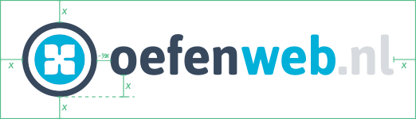
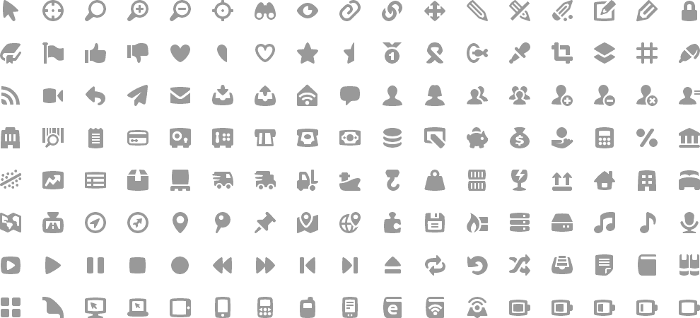
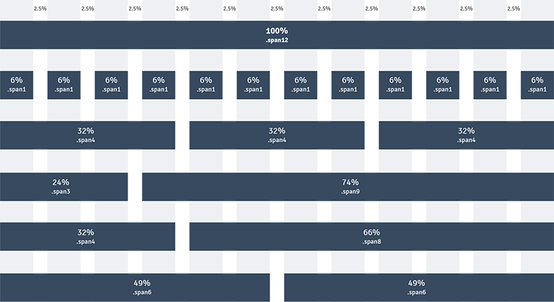
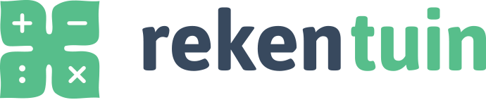
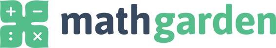
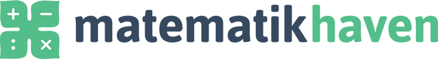

Stijl
Uitdrukking
Oefenweb is een spin-off bedrijf van de Universiteit van Amsterdam sinds 2009, en sinds 2013 heeft Cito een minderheidsbelang in Oefenweb. Hoewel het bedrijf een onafhankelijke partij is, zijn de banden met de acedemische wereld sterk aanwezig. Commerciële uitingen mogen direct zijn, maar belangrijk blijft de aandacht voor het academische en onderwijsperspectief.
Dit is Oefenweb. Wij maken webapplicaties voor adaptief onderwijs.keywords/voice words: adaptief, innovatief, webapplicaties, educatief, e-learning, spin-off, gamification
Koppen/headlines zijn opgebouwd uit twee delen. Het belangrijkste onderdeel is de tagline, die de centrale boodschap van het medium uidraagt. Dit kan een boodschap zijn om een product te omschrijven, maar ook een centraal concept of een specifieke promotie-actie.
Logo
Het Oefenweb logo bestaat uit een beeldmerk (symbool) en een woordmerk met payoff; in principe wordt het logo in volledige vorm gebruikt. Ook het gebruik van alleen het beeldmerk (symbool) wordt toegestaan.
Het logo heeft twee verschijningsvormen: de basisvorm, waarbij het beeldmerk naast het woordmerk is geplaatst; en een alternatieve variant als er weinig horizontale ruimte beschikbaar is, waarbij het woordmerk onder het beeldmerk komt te staan. Om het logo visuele ruimte te geven wordt een minimale afstand tot andere objecten te worden aangehouden: voor het basislogo de x-hoogte van een ‘e’, voor het alternatief de volledige hoogte van de ‘f’, en voor alleen het symbool 25% van de diameter van de cirkel.
Alternatieve versies
Lettertypes
- Brandon Grotesque
- Fira Sans
Brandon Grotesque (Typekit) Fira Sans (Google Fonts)
Kleurenpalet
Oefenweb basis kleurenpalet
HEX
#ebecef
RGB
235, 236, 239
HEX
#d7dbdf
RGB
215, 219, 223
HEX
#c3c8ce
RGB
195, 200, 206
HEX
#9ba4ae
RGB
155, 164, 174
HEX
#737f8e
RGB
115, 127, 142
HEX
#37495e
RGB
55, 73, 94
Oefenweb thema kleuren
HEX
#63add8
RGB
235, 236, 239
UI kleuren
HEX
#3598db
RGB
53, 152, 219
HEX
#2ecd71
RGB
46, 205, 113
HEX
#e84c3d
RGB
232, 76, 61
HEX
#f1c40f
RGB
241, 196, 15
Icons
Voor iconen wordt de iconset SS Pika gebruikt; een uitgebreide set van 504 iconen in verschillende categorieen en een duidelijke stijl. Deze iconen zijn beschikbaar als icon font voor gebruik in websites, of als png afbeeldingen voor gebruik op andere plekken.
Bekijk het iconen overzicht Download alle iconen als png (binnenkort)Layout
Als een opmaak veel elementen of een heldere organisatie nodig heeft, kan gebruik gemaakt worden van het onderstaande gridsysteem. Dit is gebaseerd op 12 kolommen met een modulemaat van 6% en een marge van 2.5% in de breedte. Dit systeem komt voort uit het front-end framework Bootstrap (3.0); gebruik is niet verplicht maar dient als leidraad.
Illustraties
[volgt]
Rekentuin
Logo
  Alternatieve versies
Kleurenpalet
HEX
#56bd8a
RGB
86, 189, 138
HEX
#3e8a64
RGB
62, 138, 100
Taalzee
Logo
Alternatieve versies
Kleurenpalet
HEX
#4fbed1
RGB
79, 190, 209
HEX
#3c8f9e
RGB
60, 143, 158
Words&Birds
Logo
Alternatieve versies
Kleurenpalet
HEX
#b191c3
RGB
79, 190, 209
HEX
#7f74af
RGB
60, 143, 158
In gebruik
Email handtekening
Elke medewerker van Oefenweb kan gebruikmaken van dezelfde email handtekening; dit bevat het Oefenweb logo, en 3 knoppen met links naar Oefenweb op sociale netwerken.
Om te handtekening te gebruiken:
- Klik op onderstaande knop;
- Selecteer alle elementen op de pagina met Ctrl + A (Windows/Linux) of Cmd + A (Mac);
- Kopieer alle inhoud met Ctrl + C (Windows/Linux) of Cmd + C (Mac);
- In je email programma, ga naar de instellingen voor email handtekening;
- Plak alle zojuist gekopieerde inhoud met Ctrl + V (Windows/Linux) of Cmd + V (Mac).
- Sla de instellingen op.